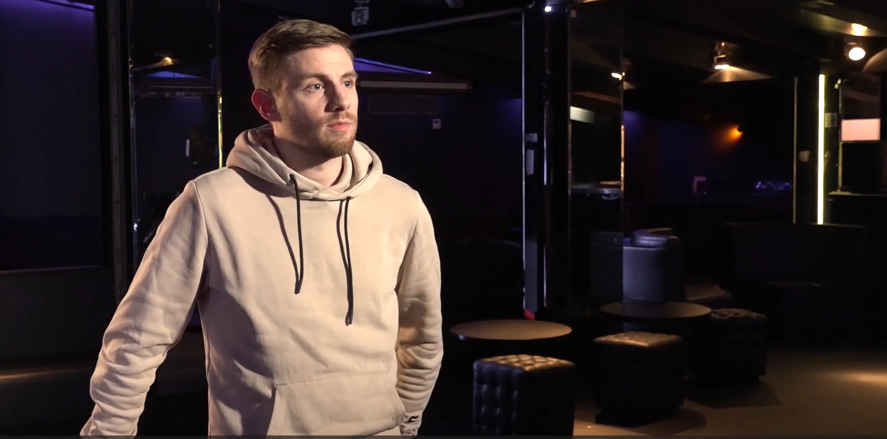
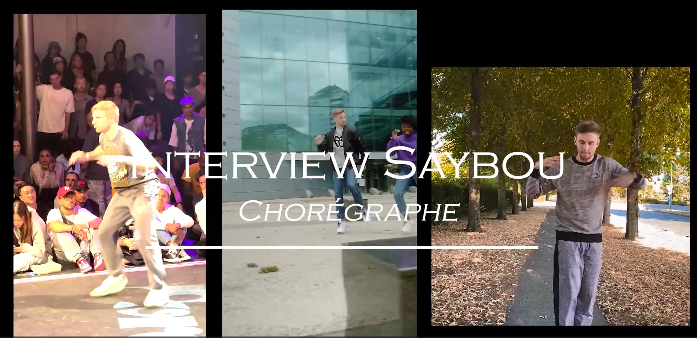
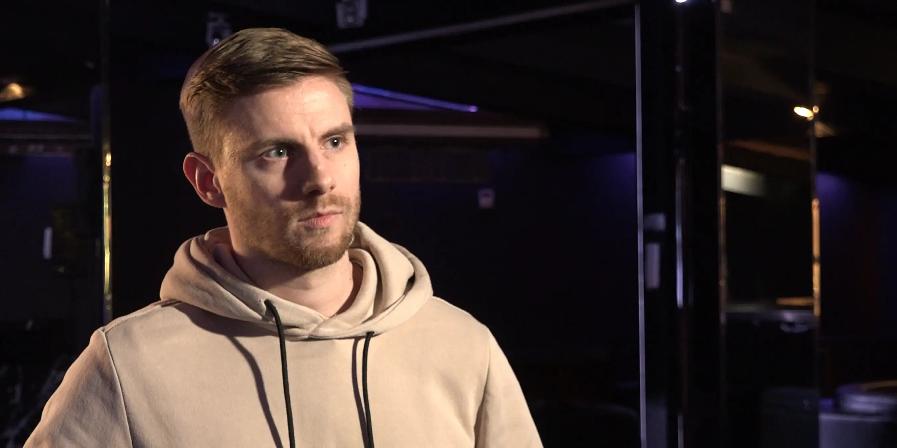
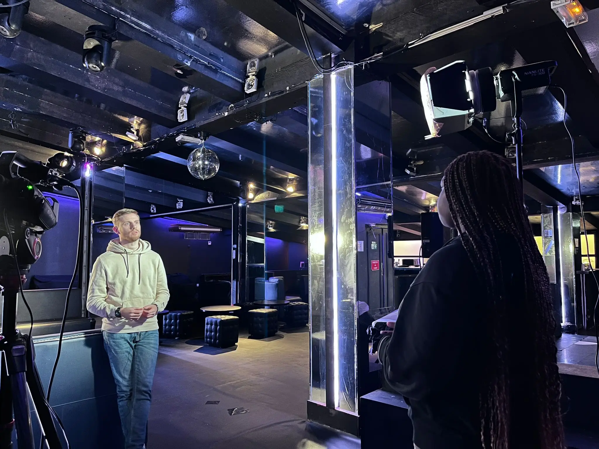

Interview
Présentation
Lors de ma première année de BUT MMI, par groupe de 5, nous devions interviewer une personne issue du spectacle vivant. Pour notre part, nous avons interviewé au Palace, Saybou, un chorégraphe.
De l'écriture des questions au montage et sous-titrage en passant par l'enregistrement de l'interview, ce projet m'a permis de découvrir un large panel de métiers du monde de l'audiovisuel. Ce fut une expérience fort enrichissante car nous avons fait face à de nombreux imprévus mais sommes parvenus à le surmonter.
Rôle
Cadreur, Monteur et traducteur
Date
Octobre 2022 - Janvier 2023
Compétences
Filmer
Premiere Pro
Anglais



